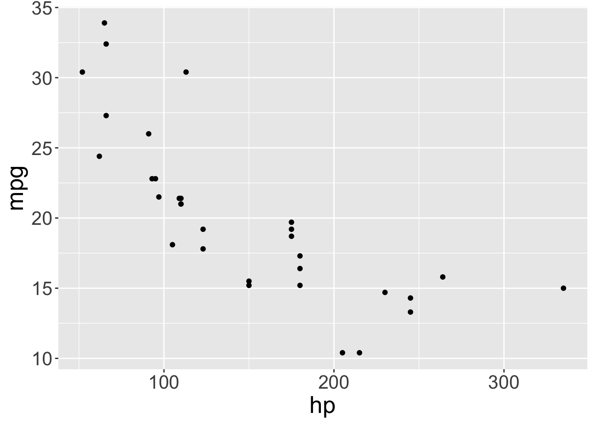
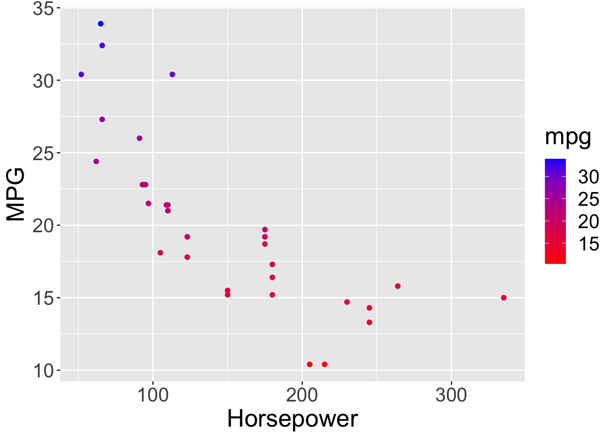
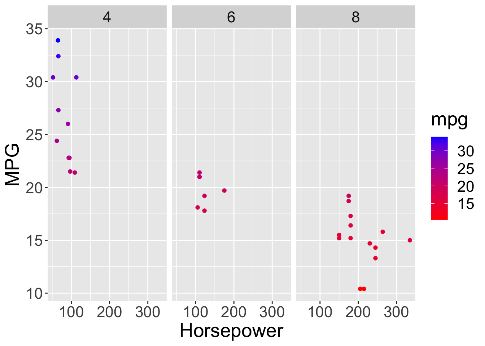
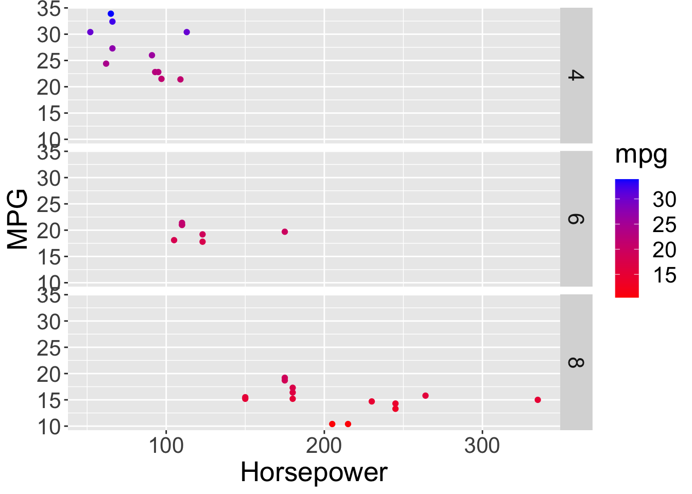
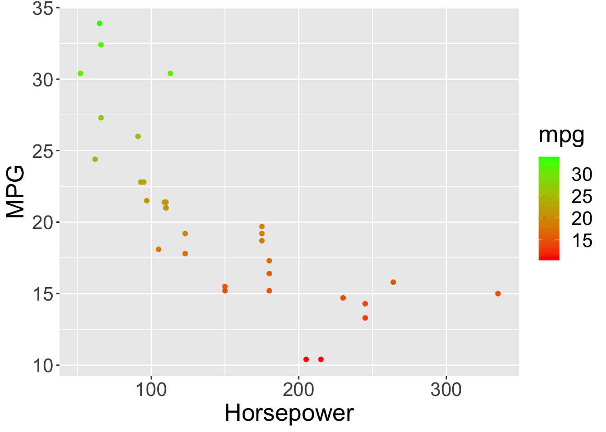
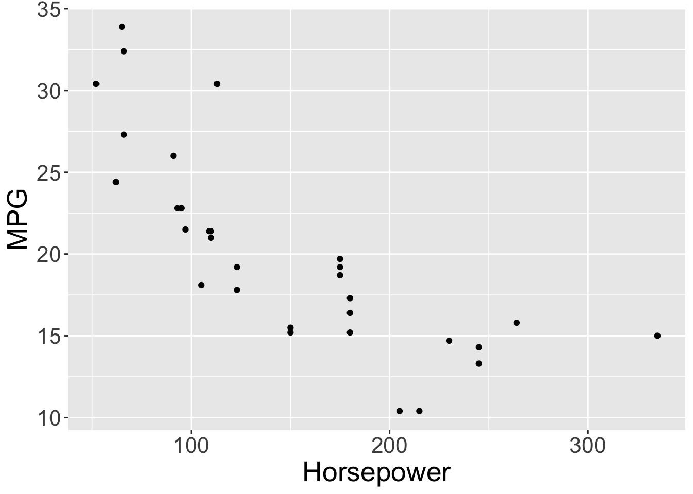

3 Building Your First Data Visualization
3.0.1 Intro to plotting and the ggplot library
We can use the plot function to create a scatter plot for the pressure data
plot(pressure)
3.1 Loading Libraries
First, let’s load the libraries you will use for this lesson. This is the first thing you should do when writing an R-Markdown document. That way, you ensure that you load all of the necessary libraries prior to running code.
# install.packages("ggplot2")
library(ggplot2)Remember to make sure ggplot is loaded into R.
You can do this by running the first chunk of this document, where it has the code library(ggplot2)
for ggplot, our first argument will be the dataset mtcars
ggplot(mtcars)
3.2 aes() function for stating your x and y axis
Within the ggplot() function, we’ll set up our parameters by using the aes() function aes stands for asthetic. For this function, we want to define the x and y axis.
We want to plot how miles per galon mpg is related to horsepower hp. And then we want to split this up by cylnders cyl.
The x-axis will be hp and the y-axis will be mpg
ggplot(mtcars, aes(x = hp, y = mpg))
3.3 The power of +
3.4 Adding features to your ggplot graph using +
We can add new features by using other functions that are part of the ggplot library.
We do this by using the + sign
geom_() function, which is our geometric object, is used to state the kind of graph we want
Now let’s use the geom_() family of functions to state what kind of graph we want.
We want a scatterplot, so we are going to use the function geom_point()
No arguments are required for geom_point()
ggplot(mtcars, aes(x = hp, y = mpg)) +
geom_point()
3.5 theme() function for modifying components of your graph
let’s set the size of the text by 20 using theme(text = element_text(size = 20))
ggplot(mtcars, aes(x = hp, y = mpg)) +
geom_point() +
theme(text = element_text(size = 20))
3.6 labs() function for labeling your graph
ggplot(mtcars, aes(x = hp, y = mpg)) +
geom_point() +
theme(text = element_text(size = 20)) +
labs(x = "Horsepower", y = "MPG")
3.7 scale_color_gradient() function for using a color gradient on mpg
We want the low mpg to be blue and the high mpg to be red.
IMPORTANT! In order to make this function work, you have to state which variable you want it to color. Let’s color mpg.
In order to state this, we have to go back to the aes() function and write an additional argument. Remember, arguments are separated by ,
So your aes code should look like this now aes(x = hp, y = mpg, color = mpg)
ggplot(mtcars, aes(x = hp, y = mpg, color = mpg)) +
geom_point() +
theme(text = element_text(size = 20)) +
labs(x = "Horsepower", y = "MPG") +
scale_color_gradient(low = "red", high = "green")
3.8 facet_wrap() function splitting up the graph by a group
We want to split our graph up by the variable cyl
use ~cyl to wrap by columns
use ncol = to specify how many columns you want in your layout